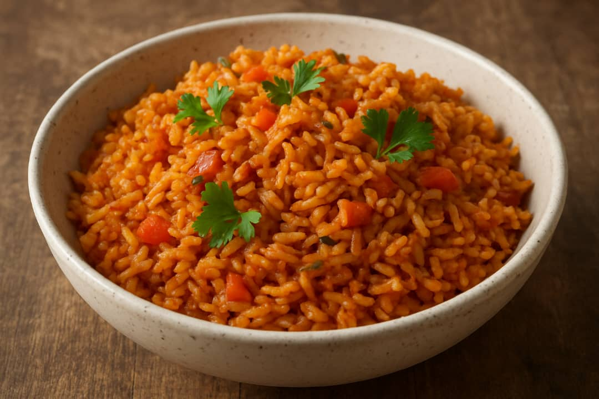

Jollof rice
A classic West African one-pot dish made with
rice,tomatoes,peppers,and spices.
Recipe detail
Prep time:15 minutes
Cook time:45 minutes
Servings:4
Difficulty:Easy
Ingredients
- Rice
- Tomato paste
- Fresh tomatoes
- Onion
- Vegetable oil
- Pepper mix
- Seasoning cube
Instruction
- Blend the tomatoes,peppers,and onions
- Heat oil in a pot and fry tomatoes paste and blended mix
- Add seasoning,salt,and bay leaves and let it simmer
- Pour in the rice and waterto cook
- Cover and cook on low heat until the rice is soft
- Stir gently and serve
